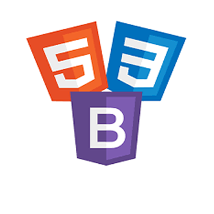

<div class="container">
	<div class="row">
        <div id="speaker-detail" class="col-lg-10 col-lg-offset-1">
            <div class="row">
            	<button title="Close (Esc)" type="button" class="mfp-close">×</button>

                <div class="col-md-5 col-lg-5 no-padding">
                    
                </div>

                <div class="col-md-7 col-lg-7">
                    <h2>Angular<span>JS</span></h2>
                    <p class="lead">Executive Creative Director of <strong>Interdum Co.</strong></p>
                    <ul class="social list-inline list-unstyled">
                    	<li><a href=""><i class="fa fa-2x fa-facebook-square"></i></a></li>
                        <li><a href=""><i class="fa fa-2x fa-twitter-square"></i></a></li>
                        <li><a href=""><i class="fa fa-2x fa-google-plus-square"></i></a></li>
                        <li><a href=""><i class="fa fa-2x fa-linkedin-square"></i></a></li>
                    </ul>

                    <div id="content">

											<p>AngularJS makes web development less painful and more organized – it’s unsurprising that today it’s one of the most popular tools in web development. CodeGarage helps you get started with this essential web development framework quickly and easily, guiding you through AngularJS by showing you how to create your own real-world applications. By adopting this approach, you can bridge the gap between learning and doing immediately, as you follow the examples to learn the impressive features of Angular and experience a radically simple–and powerful–approach to web development. </p>
											<p>You’ll begin by creating a simple program, which will help you get to grips with the core components of Angular, including its MVC architecture, and learn how each part interacts with one another. This will give you a solid foundation of knowledge from which you can begin to build more complex applications. By creating these applications yourself, you will find out how AngularJS manages client-server interactions and how to effectively utilize directives to develop applications further. CodeGarage will also provide hands-on experience - testing your app with tools such as Jasmine, as well as tips and tricks for some of the most common challenges of developing with AngularJS.</p>
<p>At CodeGarage, we will help you get grips with AngularJS and explore a powerful solution for developing single page applications. Come study with us. Happy Learning!!</p>

                    </div>
                </div>

            </div>
        </div>
    </div>
</div>
